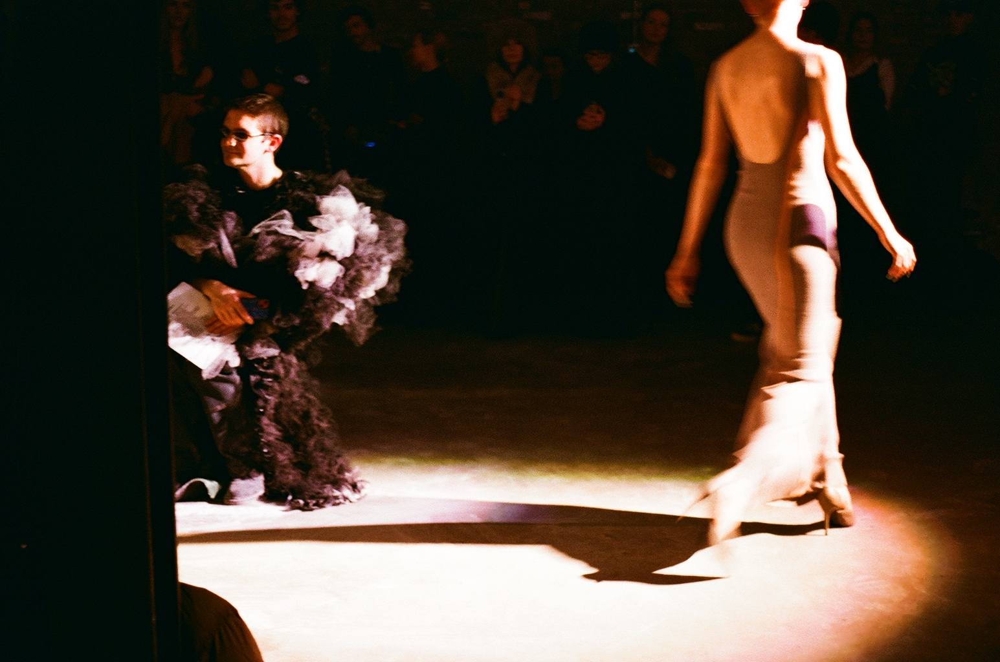
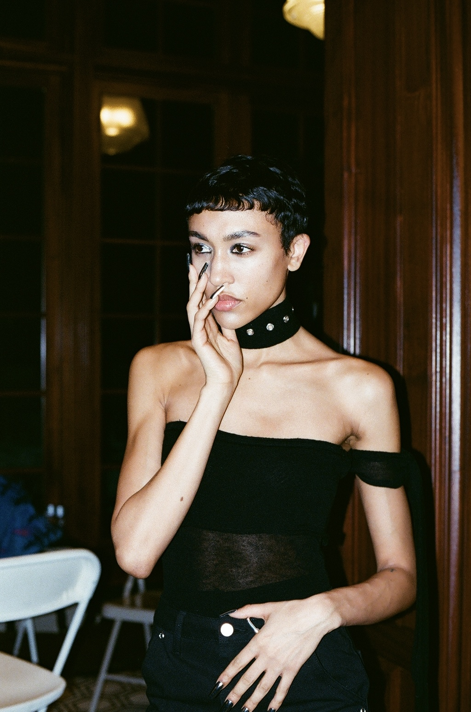
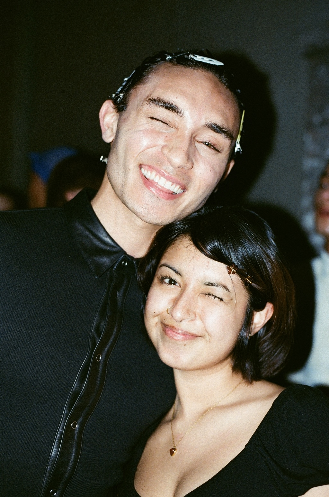
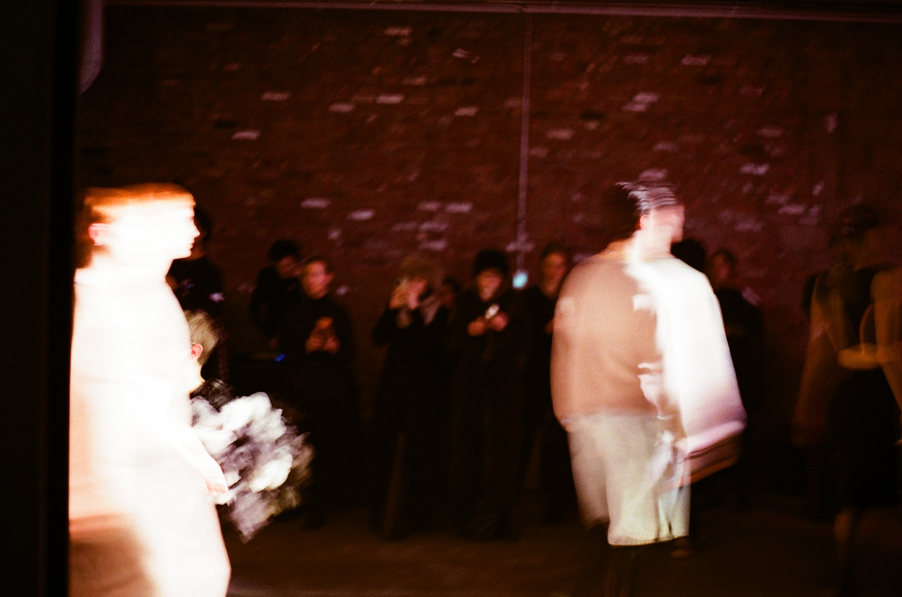
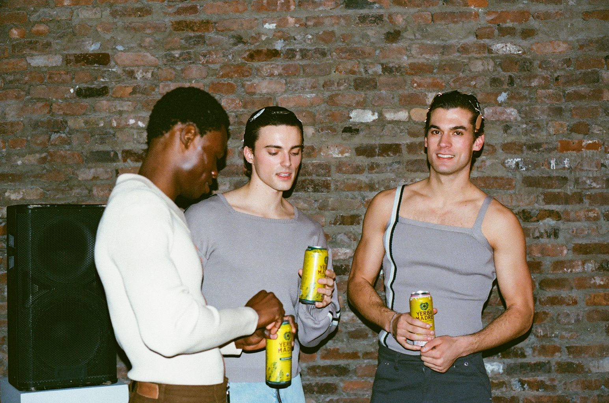
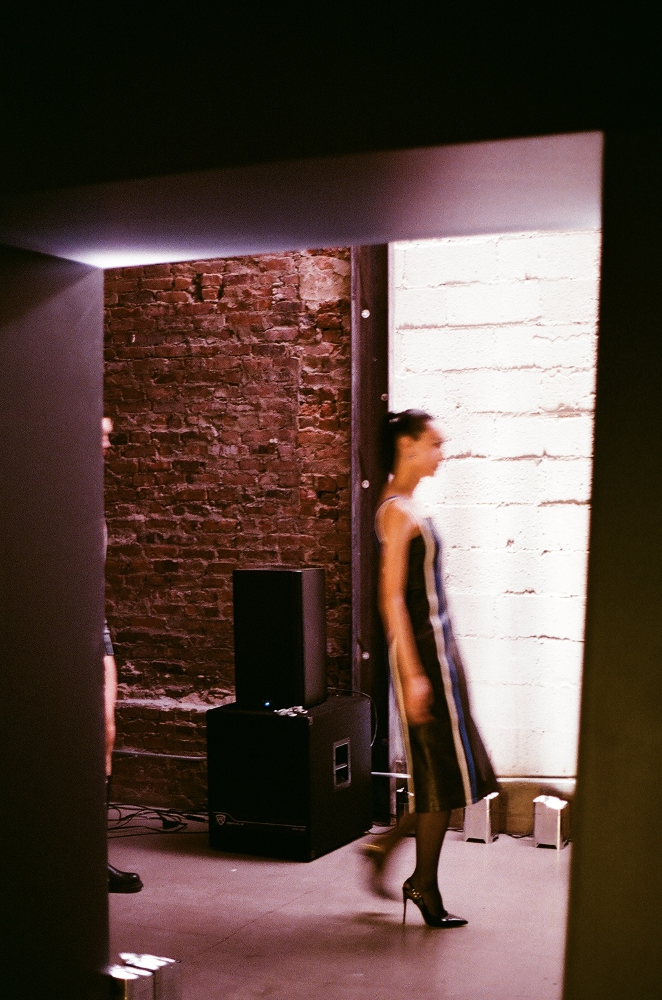

Project 03
NYFW
Fashion as movement, performance, and atmosphere — from backstage details to runway energy. This series documents the visual rhythm of fashion moments before, during, and around the show.





